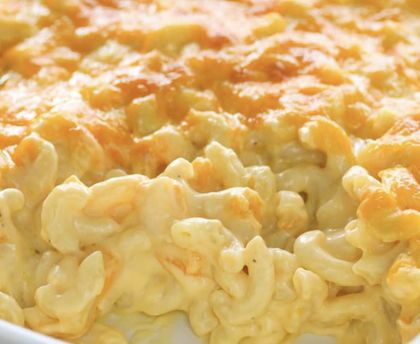

Temps de cuisson : 45 min
Difficulté : Très facile
Préchauffez le four à 180°C (thermostat 6).
Mettez de l'eau à chauffer pour les pâtes. Faites frire les lardons sans ajouter de matière grasse.
Faites cuire les pâtes environ 5 minutes.
Dans une casserole, ajoutez la farine à 20ml d'huile, fouettez pour éviter les grumeaux. Versez le lait en continuant à remuer. Salez, poivrez et ajoutez la muscade.
Ajoutez le gouda et le parmesan râpés. Puis ajoutez le lard et mélangez jusqu'à ce que le fromage ait bien fondu.
Mélangez les pâtes précuites et la crème, versez dans un plat. Faites cuire au four pendant environ 30 minutes, jusqu'à ce que le dessus soit bien doré.